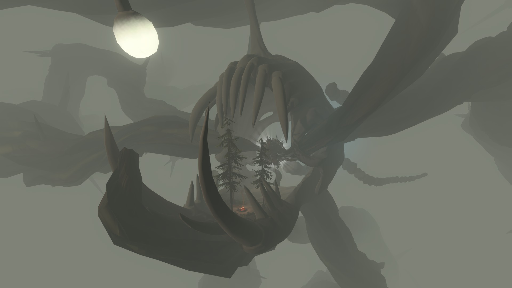
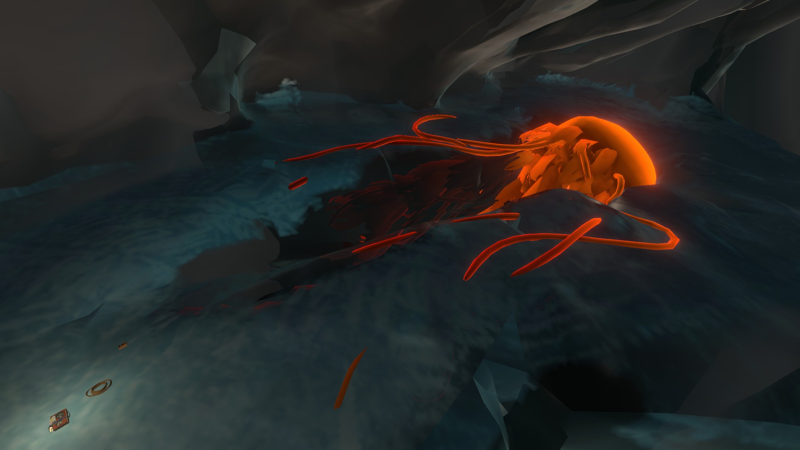
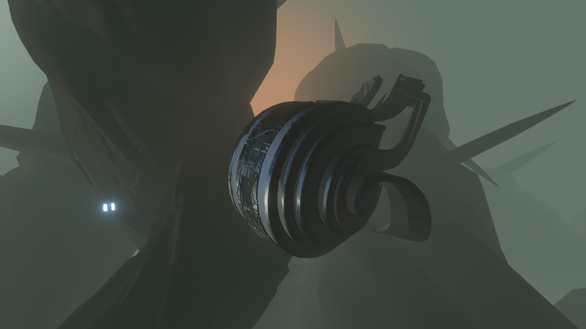
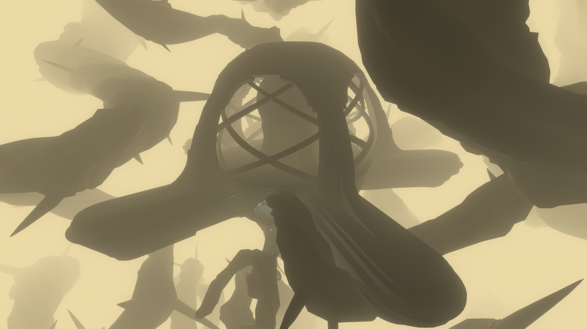

PLACES OF INTEREST
Anglerfish Nest
The Anglerfish Nest lies within the largest and most dangerous node in Dark Bramble. Five sleeping Anglerfish guard the entrace to the node and if woken up, will eat whatever intruder had entered. At the center of the node is a cluster of anglerfish eggs that glow red. Due to the red glow of the eggs, this node's entrance is easily identifiable compared to other nodes whose entrances always remain white.
Anglerfish Skeleton & Feldspar's Camp
An anglerfish skeleton caught inside large vines lies within a node with no living anglerfish, making it one of the safest locations in Dark Bramble. Resting on the skeleton's jaw is a couple of trees and a camp where the previously presumed to be dead Feldspar plays their harmonica. When asked, they explain that they had crashed their ship somewhere behind the skeleton and set up camp here for the time being. While talking to Feldspar, it becomes clear that they don't seem overly eager to rejoin civilization and have come to enjoy the (relative) peace and quiet of Dark Bramble. They explain that they needed a break from the pressure of being the best that ever was.
After finishing exploring the core of Giant's Deep, Feldspar had decided that their next big adventure was Dark Bramble, as no Hearthian had ever been there before. They had been camping here on this skeleton ever since their ship had been clipped by an anglerfish and violently crashed. Feldspar is one of the Outer Wilds Ventures founders, alongside Gossan, Slate, and Hornfels. Feldspar is described as "absolutely fearless" by Hornfels and is an explorer at heart. They are revered as one of the best pilots in Hearthian history. They were also the first Hearthian to be intentionally launched into space and made the first landing on the Attlerock. They have traveled to all planets in the solar system but have been stranded on Dark Bramble for a long time, leading Hearthians to believe they had died.
Frozen Jellyfish
A giant orange jellyfish can be found frozen inside one of the exterior pieces of Dark Bramble. The jellyfish looks like the same jellyfish that can be found at the core of Giant's Deep. Near the frozen jellyfish is a note left behind by Feldspar documenting their failed attempt to eat it. After testing both the outside and inside of the jellyfish, they concluded that it is only useful for insulation from electricity.
Escape Pod 3 and the Nomai Grave
One of the three Nomai escape pods that crashed in the Outer Wilds solar system. The escape pod was launched from the Vessel after it had taken significant damage. The Nomai on Escape Pod 3 were Escall, Din, Secca, and seven other unnamed Nomai. While the Nomai on Escape Pod 3 tried to flee Dark Bramble, the escape pod crashed into a bundle of large vines, destroying their movement and communication capabilities. They tried to hold out as long as possible, but they were running out of breathable air and anglerfish attacks had become more frequent. Secca suggested that their best chance of survival was to return to the Vessel to either repair the damage it had taken or await rescue.
Because the Vessel's signal was growing fainter, the Nomai rushed out of the escape pod and followed the one of the two signals they picked up until it lead to a dead end. The signal had been coming from a bramble seed much too small for any Nomai to fit through. With the time they used up following the signal, it had become to faint to even track it anymore, leaving them stranded to die at what is now known as the Nomai Grave.
The Vessel
A giant Nomai ship called the Vessel can be found stuck inside a Dark Bramble node containing no anglerfish. The Nomai, a nomadic species that would travel to many different solar systems, had suddenly received a mysterious signal that appeared to be older than the universe itself. This had been the first time any Nomai had encountered something of that nature, so the clan leader Escall had decided to warp to the location of the signal immediately. Because Escall had worried the signal would disappear as suddenly as it had arrived, they decided to inform the other clans of their destination only upon their arrival. When the Vessel warped to the Outer Wilds solar system, it had been grabbed by Dark Bramble, which started to tear it apart from the inside out. Filix had tried sending out a call for help to the other Nomai Vessels, but no one responded. While the Vessel cannot send out any messages, it still receives messages from other Nomai clans' Vessels. The message it received is from a Nomai named Canna, calling out to other Nomai clans to group up because the universe is dying and many solar system's suns have been going supernova. The discussion that follows leads to the reveal that Escall's clan had become a myth called "The Disappearence of Escall," a tale told for generations about Escall's Vessel suddenly disappearing as if it had warped out of existence, never to be seen again.